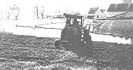
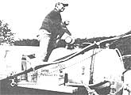

Our agricultural industry is converting to a new and (on the surface, at least) better method.
To many people, no-tillage farming appears to be a tremendous step forward for agriculture. At a time when fertile topsoil is being worn away by wind and water at rates that are figured in tons per acre per year, a drastic new soil-conservation measure is certainly in order. And as you're about to see, no-till does preserve topsoil, but this advantage doesn't come without certain trade-offs. As it's currently practiced in the U.S., no-till farming might more appropriately be called no-till/chemical agriculture.
WHAT IS NO-TILL FARMING?
In conventional tillage, the earth is turned to a depth of 8 to 12 inches with a plow, most commonly one of the moldboard variety. Subsequently, the plot is disked at least twice more to prepare the seedbed before planting takes place. In no-till, however, the first three steps in conventional cultivation are dispensed with. Planting is done right through the residues of previous plantings and weeds with a device (usually a coulter) that cuts a slot a few inches wide, followed by equipment that places the seeds and closes the trench. There's much more of a difference between these two agricultural techniques than three passes over the field, though, so let's look into the rationale of each method.
WHY NO-TILL?
In the first paragraph of the landmark 1943 book Plowman's Folly , Edward H. Faulkner said, "The truth is that no one has ever advanced a scientific reason for plowing." Nonetheless, 40 years after that publication cracked the foundations of agricultural science, most farmers still plow. Why?
The most obvious (or at least the most frequently claimed ) reason that soil is tilled is to loosen it so oxygen and water can reach the area where roots will grow. It seems logical that friable, loose earth would allow roots to spread evenly and to proliferate, and this is indeed the case. But using a moldboard plow doesn't necessarily produce such soil. Plowing and disking a field results in a soil with broken structure lying atop a heavily compressed plow pan (the undisturbed layer that the plow doesn't reach). This broken-up soil is very prone to being compacted by rainfall. In addition, many passes must be made over the field with very heavy equipment, the wheels of which further compress the soil. Untilled ground starts off being less compacted than a heavily machine-worked field, and it stays that way. What's more, earth that has become compressed by tillage or machinery will return to a less compacted state after a few years of no-till planting.
Plowing, it is claimed, incorporates fertilizers and crop residues into the soil, making nutrients readily available to the roots of the plants. Turning organic matter under also has the benefit of preventing planters from becoming fouled with surface trash. In no-till farming, crop residues are left on the surface, where the nutrients that result from their decay can leach into the soil. This leaching process is far more thorough than you might imagine. Fertilizers-including anhydrous ammonia, phosphorus, and potassium-are at least as effective on the no-till fields where they've been dispersed as on the plowed plots. And with the right equipment, these ingredients can be placed directly into the planting trench (where they're most needed) during seeding. As for the potential problem of the planter fouling with residues, specially designed no-till planters have a device that cuts a slot through surface trash. Besides, studies have shown that the accumulation of this surface material levels off after a few seasons of no-till practice.
Of course, conventional plowing does prepare a seedbed. No-till farming also does this . . . but in a much more restrained way. In normal tillage, the entire field is turned into a seedbed that may be mounded for planting. With no-till, one simply prepares a narrow trench of the appropriate depth. Studies have shown that plant roots develop at least as well in a no-till field as in a plowed one and that the lack of mounding exposes less of the soil to air and evaporation.
Conventional plowing is also done across the contours of the land to prevent soil erosion. But once again, this rationale doesn't hold up when you look at the results possible with no-till. The crop residues on a no-till field prevent runoff to an amazing extent: On slopes that are steeper than can normally be planted, no-till fields have consistently shown next to no topsoil loss after downpours of several inches per hour. That same vegetative cover also makes the no-till field less susceptible to the effects of wind erosion. This type of agriculture truly offers a solution to the problem of topsoil loss.
A fringe (but certainly not insignificant) benefit of the retention of runoff is that no-till soils stay more moist than those in tilled fields. The surface residues trap water and protect the earth below from the evaporative effect of the wind. In the West, where adequate spring moisture depends largely on snowmelt, the vegetative cover helps keep the snow from blowing away. The advantages don't end there, though. If you grimaced a few paragraphs back when we mentioned anhydrous ammonia, consider this: One of the main problems with conventional agriculture's heavy use of nitrogen fertilizers is the leaching of these compounds into surface water during runoff. By retaining rainfall, the untilled field also better holds the chemicals that have been applied to it, thereby decreasing their pollution potential.
The list of environmental benefits that no-till farming boasts over conventional practices goes on and on. But beyond its ability to create a more natural soil that retains nutrients and water, prevents soil erosion, and compacts less, the no-till technique offers a number of immediate financial advantages to the farmer. Not only are the number of trips over the field cut by at least three (thereby saving fuel and wear and tear on tractors), but fewer pieces of equipment are needed. Plows, cultivators, and disk harrows become obsolete. And because the no-till planter can be pulled by a smaller tractor than is required to drag a disk or plow, money can be saved on the size of this piece of equipment, as well.
Yields are generally at least as good with no-till agriculture as they are with plow techniques. Though the soil does stay cooler until a little later in the spring because of the insulating layer of residue, the day/night soil temperature fluctuations are smaller. A no-till field rapidly makes up its deficit in growth rate as the weather turns warm. And if the summer should be really hot and dry, no-till yields will nearly always exceed those of plowed ground. Since soil moisture levels can be more than 10% higher in late July in an unplowed piece of ground, it's not surprising that plants are happier in a field covered with mulch.
In short, the more one looks into the justifications for conventional agricultural practices, the more one realizes that there really isn't much sound defense for tillage. There is, however, one more point that plow advocates raise to defend the technique, and it's one that poses a real problem for people with strong environmental leanings: Cultivation is the way in which conventional agriculture controls weeds, both before and after planting. In no-till farming, at least as it's practiced today; herbicides take the place of the plow.
SPRAY IT
In 1982, about 275 million acres of U.S. cropland were sprayed with 360 million pounds of active herbicidal ingredients. Twenty years ago, before the advent of no-till agriculture, the numbers were only tiny fractions of these figures.
Herbicides supersede the three preplant passes that the practitioner of tillage must make over the field. Chemicals, instead of plows and disks, wipe out the existing weeds and may be used to either kill or suppress growth of the sod cover crop that seeds will be planted into. They may be used again to control weeds before the plants come up, in the form of a preemergence chemical that's either applied at planting, sprayed from land-based equipment, or dropped from the air. Later, after the residual effect of the preemergence herbicide has disappeared, postemergence chemicals may be applied to control weeds between the rows. Then too, a herbicide may be used to wipe out inter-row interlopers before a second cropping.
Of course, farmers use herbicides on tilled ground, too. At the very least, though, the no-till farmer's use of herbicides will equal that of conventional practice. More often, unfortunately, significantly more herbicides are used in no-till farming than are typically applied to tilled ground. And in some cases, where crop residues harbor insect pests, the use of insecticides may be greater, as well. What does this mean for our health and that of the land? Let's look further into herbicides to see.
HOW DO HERBICIDES WORK?
Modern weed control really had its beginnings in 1945, when 2,4-D was introduced. Prior to that time, the laborious practice of controlling weeds with chemicals had been accomplished with inorganic materials such as borax and arsenic trioxide. But this new breed of synthetic organic chemicals, of which 2,4-D was - and still is - the most widely used, allowed success with quantities that were mere fractions of the amounts of inorganics that had previously been required to do the job. Obviously, the new herbicides were a real breakthrough in concentrated toxicity.
Broadly speaking, herbicides can be divided into two major categories: selective and nonselective. The first group can be used, in the proper concentration, to kill one type of plant without harming another. The latter group is generally used to sweep a field clean of whatever is growing there. Typically, a nonselective herbicide such as paraquat might be used after the harvest in the fall or before planting in the spring to kill weeds, sod, or a cover crop. A selective herbicide such as 2,4-DB might be used to combat weeds around a growing crop. If applied in the proper concentration, the 2,4-DB won't affect the crop plants, because they lack a certain enzyme that processes the chemical. The weeds, however, will be able to convert the 2,4-DB into deadly 2,4-D. The weeds' enzymatic versatility thus proves to be fatal.
Herbicides can be further divided into groups according to the route by which they attack. Contact herbicides kill a plant by destroying its surface cellular structure. Paraquat, for example, is a desiccant; that is, it robs moisture from the weed, killing it within a couple of days. Translocated herbicides actually enter a plant's vascular system - either through the foliage after direct spraying or through the roots after ground application - and disrupt one of its life processes. 2,4-D, an auxin-type herbicide, accelerates growth to the point that the plant dies. Atrazine, which is nearly as popular as 2,4-D, attacks chlorophyll production in a weed, limiting its ability to take nourishment from the sun. Dalapon, another widely used herbicide, interferes with the activity of a B vitamin called pantothenic acid which is essential to a plant's development. Others take such avenues of attack as halting the formation of amino acids, preventing the production of sugar and complex starches, and so on. There are nearly as many ways of killing weeds as there are herbicides.
WHAT SHOULD WE WORRY ABOUT?
Toxicity: Herbicides work because they're dangerous; almost without exception, a human could be killed by ingesting enough of a weed killer. Some herbicides, however, would have to be taken in pretty heavy doses to do the job. Paraquat is probably the most toxic weed killer in widespread use today. In laboratory tests, half of a population of rats will die if they're fed 150 milligrams of paraquat per kilogram of body weight. To put that in human terms, it takes about a teaspoon of paraquat to kill a person. People who handle herbicides - in both production and application - can be in great jeopardy if they don't exercise proper precautions.
How likely is it that we'll be poisoned by herbicide residues in our food? Not very likely. First of all, our nasty example chemical, paraquat, is only applied to fields at the rate of about a pound of active ingredient per acre, which means that its concentration would be pretty low op any given unit of food. And second, as you'll see in the paragraph on persistence, the concentrations of many herbicides drop off quickly. We do, however, consume some amount of herbicides on treated crops or via livestock that have eaten the crop or foraged on the ground. The long-term effects of even small dosages are very difficult to predict.
There is no question that wildlife is damaged or killed by certain herbicides. Birds can be injured if they get in the way of spraying (small amounts of paraquat can kill eggs), and the runoff from herbicide-treated fields can be injurious to a range of water-dwelling organisms. The herbicides paraquat, atrazine, and MSMA have been found to inhibit the growth and productivity of algae in streams, which can affect the overall bioproductivity of the water. (Of course, no-till farming goes a long way toward eliminating water runoff, so this new agricultural practice may limit that specific effect.)
Persistence: Herbicides remain active in the soil for anywhere up to about 30 months, but most of the commonly used chemicals have broken down by the end of the eighth week after their application. DDT, an insecticide, gained its notoriety because it remains active in the environment for a very long time, accumulating in the bodies of creatures (especially birds) exposed to it. Herbicides, as opposed to insecticides, are less likely to show such effects because they tend to break down as they work. For example, 2,4-D is degraded as it does its job of stimulating auxins in the plant. Paraquat may be the herbicide that presents the greatest persistence problem. Though it's held inactive in most soils, clay-heavy earth may enhance its cumulative qualities, eventually posing a hazard after a field has been sprayed for several years.
Ecological effects: There is widespread concern that herbicides may kill soil microorganisms, those bacteria and fungi that decompose organic matter and make the earth fertile. In fact, many herbicides may inhibit microorganism growth, and a few are very destructive. Others, such as 2,4-D, seem to have no effect at all.
There's also reason to worry about the development of strains of weeds that aren't affected by herbicides. This isn't a matter of the genetic development of strains resistant to herbicides, the way in which some insects have come to tolerate insecticides. Rather, weeds that are already resistant - Johnsongrass is a good example - often flourish in herbicide-treated fields. Because other weeds that may have competed with the resistant species have been wiped out, the tough weeds are free to run amok.
Problems such as the proliferation of resistant weeds emphasize one of the major criticisms that proponents of organic agriculture level against no-till/chemical farming. By attempting to dominate the soil (an essentially hubristic approach), farmers may leave themselves open to disastrous failures. Learning to work with and improve the soil is certain to be a far safer and more productive approach in the long run.
Are there means on the horizon for eliminating the need for synthetic organic herbicides? Certainly. The move away from monocropping is already reducing weed problems, and many of the facets of good husbandry (such as meticulous screening of seed for cleanliness) help. Then too, there are developments in natural weed control. Scientists at the University of North Carolina are using plants against plants. By incorporating allelopathic species (which release chemicals to fight off neighbors) as cover crops in conjunction with no-till plantings, they're having great success at controlling weeds. So, aspects of no-till may offer advantages over conventional tillage when coupled with natural controls.
In the near future, however, the necessity of having a successful crop every year just to keep the bank at bay is probably going to keep most no-till practitioners from trying any risky experiments. And in the meantime, no-till agriculture offers far more protection of our precious topsoil than the plow does. How soon the conversion to natural practices can be made is a difficult question. Chemical companies have a tremendous vested interest in seeing today's approach remain in place, and powerful vested interests seem to determine our nation's agricultural policies. If the conversion is to be made, it will probably have to develop from the soil upward.
|
 Herbicides are often used in no-till farming to kill a cover crop before a cash crop is planted in the spring. Of the herbicides that are applied to combat weeds, paraquat is probably the most toxic and persistent. |
 |
|